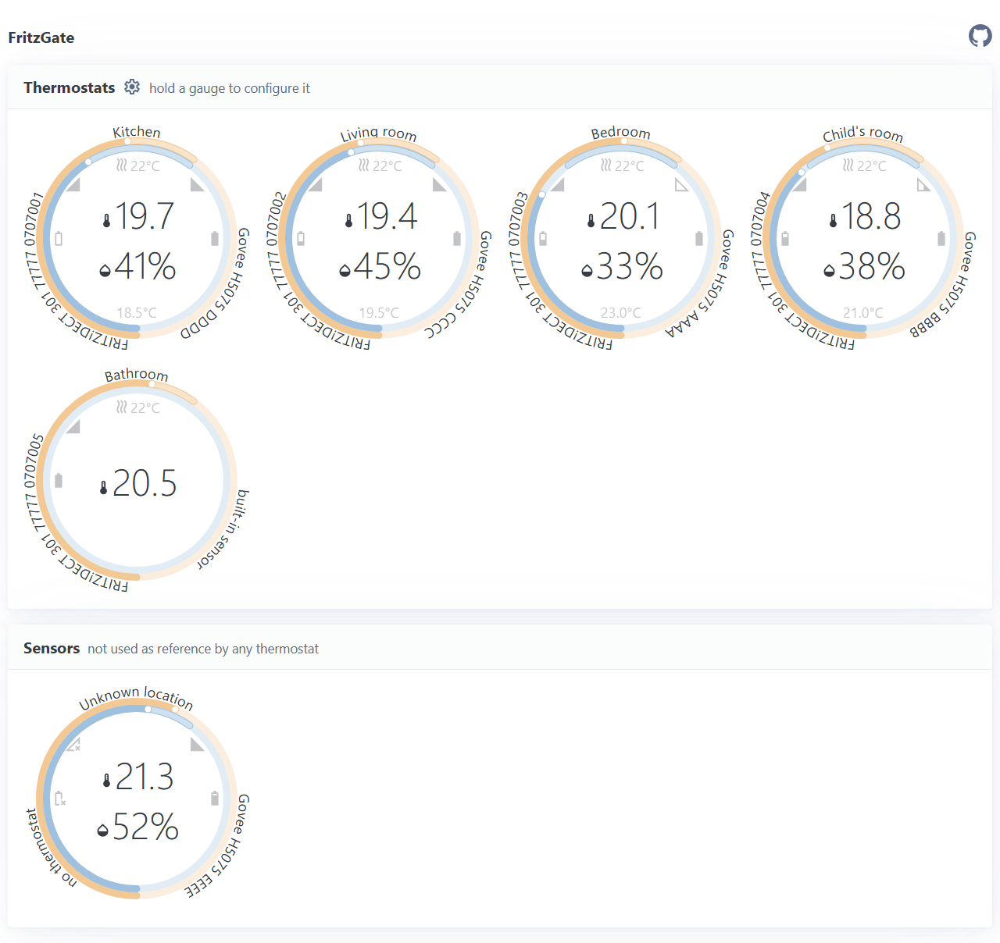
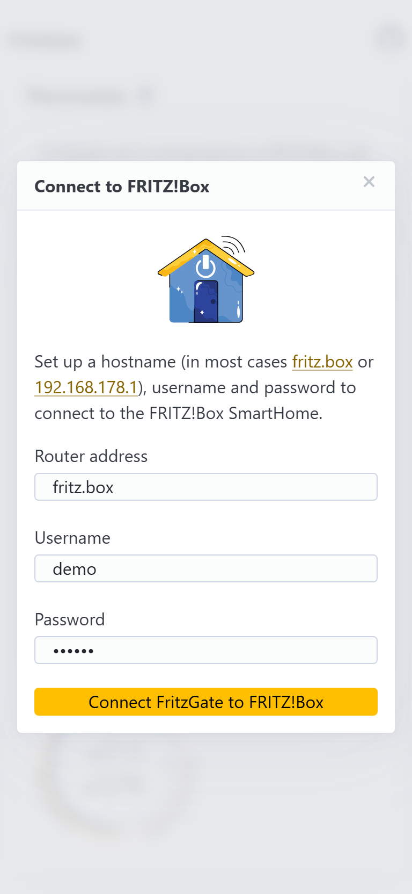
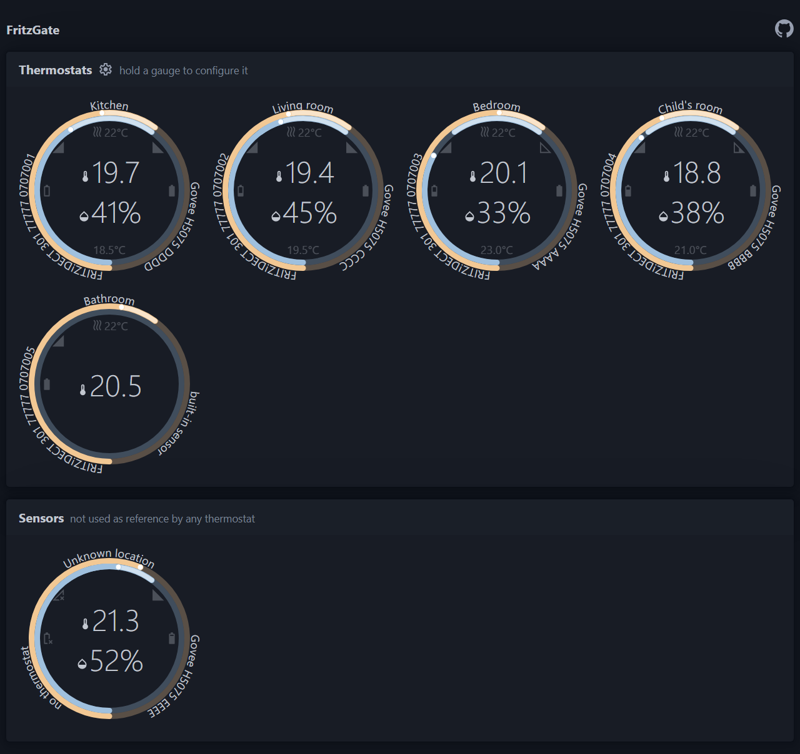

For FRITZ!DECT 301 & 302 thermostats
Heat to the room's temperature,
not the radiator's.
Bind a Bluetooth thermometer to each thermostat. FritzGate keeps correcting its offset on your FRITZ!Box, so every room reaches the temperature you set.
- 70+ Bluetooth sensors: Govee, Xiaomi, SwitchBot …
- Only the offset changes, weekly plans stay untouched
- ESP32-CAM board on the FRITZ!Box USB port
- Wi-Fi setup by showing a QR code to the camera
Open source · Local · No cloud


The problem
The thermostat measures itself, not your room
A radiator thermostat sits right on the hot valve, so it reads the heat of the pipe — not the air where you actually live. Rooms overshoot, corners stay cold, and energy is wasted on a temperature you never feel. FritzGate closes that gap.
Real comfort
Rooms reach the temperature you actually set — measured where you sit, not at the radiator valve.
Save energy
No more overshooting. Heating eases off once the room is truly warm, trimming wasted gas and power.
Stays local
Everything runs on your own network. No cloud account, no subscription, no data leaving your home.
Non-invasive
Your weekly schedules and FRITZ!Box settings stay exactly as they are — FritzGate only nudges the offset.
How it works
Four quiet steps, every 30 seconds
FritzGate sits between your sensors and your FRITZ!Box and keeps the two honest with each other.
Listen
It passively picks up the Bluetooth broadcasts from your room sensors — temperature and humidity, every few seconds.
Compare
It logs into your FRITZ!Box, reads what each thermostat thinks the temperature is, and compares it to the real room value.
Correct
It writes a temperature offset to the thermostat so the FRITZ!Box regulates toward the true room temperature.
Repeat
A smoothed average avoids jitter, and it holds back when heating is off — then re-checks 30 seconds later.
FritzGate computes the offset from your trusted sensor and writes it back through the FRITZ!Box — no extra hub, no rewiring.
Thermostats
Works with your FRITZ!DECT thermostats
Already paired to your FRITZ!Box over DECT. FritzGate drives them through the router you already have.
FRITZ!DECT 301
Radiator thermostat with e-ink display. Fully supported — FritzGate reads its state and applies offset corrections.
Fully supportedFRITZ!DECT 302
The newer radiator thermostat with improved sensing and boost control. Fully supported, same way.
Fully supportedSensors
70+ temperature sensors, one bridge
Already own a Xiaomi, Govee or SwitchBot sensor? Chances are it just works. FritzGate decodes the Bluetooth broadcasts of 70+ models from leading brands — pick whichever you like and place it where comfort matters.
See it live
A dashboard that fits in your browser
The whole web interface is served straight from the device — no app to install. See every thermostat next to the room sensor it follows, hold a gauge to choose that sensor, and connect your FRITZ!Box with one button. Try the interactive demo right now.

Installation
Up and running in an afternoon
No soldering, no hub, no cloud sign-up — and no developer tools: the web installer flashes the board right from your browser.
Get the hardware
An Ai Thinker ESP32-CAM board (~€8) and at least one supported Bluetooth sensor.
Flash from your browser
Connect the board over USB and click Install in the web installer. Chrome or Edge is all you need.
Power it anywhere
A USB port does the job — even the one on the back of your FRITZ!Box. No extra adapter needed.
Scan Wi-Fi by QR
On first boot, hold a Wi-Fi QR code in front of the camera and FritzGate joins your network automatically.
Connect & relax
Open http://fritzgate, click Connect to FRITZ!Box, then hold a thermostat's gauge to pick its room sensor. Done.
Ready to flash?
The web installer puts the latest release on your board. Prefer PlatformIO? The full guide lives in the repository.
FAQ
Questions, answered
Will it mess with my heating schedule?
Do I need a FRITZ!Box?
Is my data sent to the cloud?
Which sensors can I use?
How is my FRITZ!Box password protected?
Do I still need the camera after setup?
What does it cost to build?
Give your thermostats a sense of the room
Open source, local, and built on hardware that costs less than a takeaway. Flash it from your browser and start today.